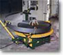
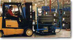
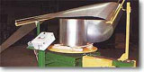
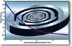

|
|
 |
| |
| OUR
CUSTOMERS "When I presented my challenges
to Accra-Wire Controls, it was apparent that the technology
used in tension control and coil handling could really help
us. We are now able to load a shift's production at one time,
eliminating up to nine coil changes." - Monty
BrennerPlant Manager
Pullman Industries
Michigan, USA
|
| |
|
|
"Deciding
When to Use Pallet Decoilers"by John Heuring

|
| |
| What's the main difference
between a microwave and a conventional oven? They both cook food,
right? So why did the invention of the microwave oven revolutionize
the way people cook? In
a word, it was efficiency. People are constantly striving to find
better ways to do things. They want everything to be bigger, stronger,
faster, and more efficient. The pursuit of efficiency led inventive
men and women to create the elevator, television, facsimile machine,
1.0-liter gasoline engine, and the Internet .
New
generation continues quest for efficiency The metalworking industries
are no stranger to the pursuit of efficiency. Gone are the day of
easy profits and "cooperative competition." Today's "dog-eat-dog"
approach to business is readily apparent. With fierce competition,
the need for increased production efficiency is greater then ever.
Can pallet decoiling help
in this quest for increased manufacturing efficiency? What does
this new coil handling technology promise regarding efficiency in
metal stamping and forming plants? When can pallet decoilers be
used successfully? What are there limitations? This article will
address these questions.
|
| |
What
is a pallet decoiler?
A pallet decoiler is a coil handling machine that enables
the user to run coil stock on its side, or "eye to the sky."
This style of decoiler allows the entire pallet of coils to be loaded
at once without the usual "up ending" and physical coil
handling associated with traditional decoiling methods such as mandrel
reels and coil cradles
Pallet
decoilers generally use some type of control point, ranging from
front and side dancer arms to control slide drums, to actuate the
drive system. In some instances, free-standing sensors are used.
Older versions of pallet decoilers were
generally "on/of" styles that reacted to a microswitch
on a dancer arm. Modern designs use some version of a variable-speed
DC drive. |
| |
Advantages
and misconceptions
Pallet decoiling can help reduce press downtime associated with coil
changes, because it enables the user to place an entire skid of coil
stock on the platform at once. With less downtime, production rates
can be enhanced. Quicker changeovers also ensure that dies stay warmer,
reducing scrap and tool wear. Pallet
decoilers also offer what is generally considered to be a safe method
of decoiling flat stock. Unlike traditional crane and "C"
hook loading, no manual coil handling is required while loading
a pallet decoiler. Back pain and abrasions are unlikely when coil
loading is done from a forklift.
Misconceptions about pallet decoilers are common
in metal-working plants. Many believe that these types of uncoilers
can be used only for very narrow and/or thin material. Others believe
that they are capable of operating effectively only at slow speed
or light loads.
The new generation of pallet decoilers, however,
is more versatile then are the older styles. Decoilers now on the
market can handle material width up to 30 inches, although generally
in thickness under 0.050 inch. Some decoilers can run stock as thick
as 0.187 inch.
Some
can handle speeds up to 400 feet per minute and quick-start roll
forming lines. Still others designs can accommodate loads in excess
of 25,000 pounds. |
| |
Applications:
Stamping presses are the most popular production machines used with
pallet decoilers. Most high-volume stampers go through hundreds of
coils of flat stock per month. Instead of stopping production for
up to 20 minutes for each coil change, they can now get their presses
back up in as little as two minutes. With
traditional coil handling methods, a coil usually picked up off
a coil stack either by a crane or a "C" hook. In some
instances, a coil would be placed on an automated up-ender to turn
the coil inside diameter (ID) horizontal. The coil would then be
either be loaded onto a mandrel reel or be dropped into a coil cradle.
Usually, changeover times for these procedures range from 5 to 20
minutes.
Other applications in which pallet decoilers
may be useful include four-slide and cut-to-length operations, which
have similar downtime and labor demands.
New technology such as specialized controllers
and high-torque drive systems that some "high-end" pallet
decoilers employ have increased their capabilities in demanding
environments. For example, most consider that high-speed, clutch-driven
roll formers with their immediate acceleration are too demanding
for pallet decoilers. However, some pallet decoilers equipped with
the new controls and systems can be used in such capacities.
An additional benefit for those running high-speed
presses or mills is that some pallet decoilers can handle coils
with outside diameters (ODs) as large as 80 inches, while many mandrels
and cradles are limited to the typical 48- or 60- inch OD coils.
The larger coils allow longer production runs between changeovers.
In some instances, the reduction in coil changeovers
allows one operator to run several lines at once. One automotive
supplier in Michigan, for example, uses pallet decoiling with all
12 of its roll forming lines in a new facility that has no mandrel
reels, cradles, cranes, or up-enders. The company also increased
coil ODs, began placing the coils at the lines rather than in a
central storage area, and purchased new mill controls. Now, each
operator runs two mills simultaneously, and production rates have
jumped 400 percent.
Progress is also being made in paying off
heavy-gauge stock from a pallet decoiler. This has always been the
biggest drawback for decoilers, because thick strip tend to have
a great deal of "clock spring." And it is difficult to
turn flat. Some pallet decoilers now include features such as plane
turners and coil containment systems to combat the problem.
|
| |
Limitations
Despite their advancements, pallet decoilers still have some inherent
limitations. One of the most confining is stock size, because running
stock wider than 30 inches or thicker than 0.250 inch is currently
not possible on a pallet decoiler. Another
potential drawback is space limitations. Some newer pallet decoilers
no longer require a loop of material to properly decoil the stock.
On lower-end models, however, a loop of material is still necessary
for proper decoiling, possibly requiring more room than do reels
or cradles.
Finally, applications in which the user is constantly
banding and unbanding the coils for short production runs are not
well suited for pallet decoilers. When various strip widths gauges
are run alternately, double mandrel reels often provide quicker
coil changeovers than pallet decoilers. |
| |
Machine
Features
It is a good idea to investigate several machine features before purchasing
a pallet decoiler. First, does the machine control material tension?
Maintaining the material tension throughout the decoiling process
reduces the chances of the kinking and "pitting" that often
occurred with earlier pallet decoiler designs. The
decoiler should have properly rated acceleration and decel-eration
times. This is the time needed for the platform to accelerate to
full speed from a dead stop and to stop completely from full speed.
If the decoiler does not have a quick ramp-up build into its controls,
the system will fail to keep up with quick-start presses and mills.
Conversely, if the decelerating time is inadequate, the decoiler
will not stop quickly enough, and the coil stock will likely over-travel,
creating other problems.
Acceleration/deceleration time is closely
linked to another important consideration, power.
Every pallet decoiler application, regardless of the style of drive
or decoiling method, is governed by the laws of inertia.
Overcoming the great amounts of inertia generated from heavy-load,
high-speed, large coil OD applications requires a tremendous amount
of horsepower. Some companies have developed computerized inertia
formulas to calculate the horsepower requirements based on the specifications
of the application. The horsepower required
is inversely proportional to the acceleration/deceleration requirements.
To illustrate, consider an application that calls for a 1-HP motor
with a four-second acceleration/deceleration time. If the acceleration/deceleration
time were increased 100 percent to eight seconds, the horsepower
requirements would be reduced by 50 percent to ½ HP. Conversely,
if the acceleration/deceleration time were cut in half to 2 seconds,
the horsepower requirements would double to 2 HP.
A final consideration before buying is
the type of drive with which the decoiler is equipped. Generally,
electric (DC) and hyghdro-static drives are considered to be the
quickest reacting. Pneumatic systems are rarely used because they
are generally regarded too "jerky" and inconsistent for
pallet decoiling.
|
| |
| Conclusion |
| |
| The new pallet decoilers
have incorporated features and technology designed to help increase
manufacturing efficiency. No longer used only for very narrow or thin
materials, some of today's pallet decoilers can handle widths up to
30 inches, while others run thickness' up to 0.187 inch. Feed rates
of as much as 400 feed per minute are available. Pallet decoilers
may not be the best choice for short-production runs that require
frequent banding and unbanding of coils. For high-production applications,
however, pallet decoilers may provide an extra margin of efficiency.
|
| |
John Heuring is a sales
consultant with Accra-Wire Controls, Inc.
REPRINTED WITH PERMISSION FROM THE NOV/DEC 1996 STAMPING QUARTERLY
833 FEATHERSTONE RD, ROCKFORD IL 61107, 815/399-8700 |
| |
| Consult
AWC for the right choice for YOUR application. |
| |
| Back to up |
|